리눅스마스터-1급 (2020-06-13 기출문제)
1과목: 리눅스 실무의 이해
1. 다음 중 클라우드 컴퓨팅에 대한 내용으로 틀린 것은?
- 클라우드 컴퓨팅 서비스는 크게 IaaS, PaaS, SaaS 등 세가지 개념으로 구분할 수 있다.
- 클라우드 컴퓨팅이 발전하면서 하드웨어 자원을 제외한 나머지 IT자원은 서비스 형태로 제공할 수 있게 되었다.
- 최근세분화된개념으로 FaaS(Function as a Service) 형태로 제공되는 서버리스(Serverless) 컴퓨팅도 클라우드 컴퓨팅의 일종이다.
- 사용자가 필요한 작업을 제시하면, 필요한 자원이 할당되어 작업하고 결과를 얻도록 해주는 'as a Service'로 제공되는 컴퓨팅 환경을 의미한다.
(정답률: 73%)

2. 다음 설명에 해당하는 리눅스의 기술적인 특징으로 알맞은 것은?
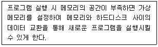
- 파이프(Pipe)
- 스와핑(Swapping)
- 리다이렉션(Redirection)
- 가상콘솔(Virtual Console)
(정답률: 86%)
3. 다음 중 리눅스 주요 라이선스(License)에 대한 내용으로 틀린 것은?
- LGPL이 적용된 라이브러리는 독점소프트웨어에서도 사용이 가능하고 LGPL을 사용해서 개발한 뒤 GPL로 변경이 가능하다.
- BSD라이선스는 공개소프트웨어 라이선스로 해당 소프트웨어를 누구나 개작할 수 있고 수정한 것을 제한 없이 배포할 수 있다.
- BSD, Apache, MIT 라이선스는 기본적으로 소스코드 취득 및 수정이 가능하므로 2차적 저작물 소스코드도 반드시 공개하여야 한다.
- 아파치 라이선스2.0에 따르면 누구든 자유롭게 아파치 소프트웨어를 다운 받아 부분 혹은 전체를 개인적 또는 상업적 목적으로 이용할 수 있다.
(정답률: 73%)
4. 다음 중 리눅스 운영체제의 특징으로 틀린 것은?
- 리눅스는 약간의 어셈블리와 대부분의 C언어로 작성되어 이식성이 뛰어나다.
- 하나의 시스템에 다중 사용자 접속 및 사용자별 다중 처리 시스템을 지원한다.
- 운영체제의 핵심인 커널(Kernel)을 제외한 나머지 프로그램들은 소스가 공개되었다.
- 고유 파일시스템 외 DOS, Windows, 상용 유닉스 등의 다양한 파일 시스템을 지원한다.
(정답률: 84%)
5. 다음 중 데비안 계열에 속하는 리눅스 배포판으로 틀린 것은?
- CentOS
- Ubuntu
- Linux Mint
- Kali Linux
(정답률: 80%)
6. 다음 명령의 실행 결과로 ( 괄호 )안에 알맞은 것은?
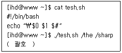
- $0 /sharp #
- $0 /the 2
- ./test.sh /the #
- ./test.sh /the 2
(정답률: 66%)
7. 다음 중 시그널(Signal)에 대한 설명으로 알맞은 것은?(오류 신고가 접수된 문제입니다. 반드시 정답과 해설을 확인하시기 바랍니다.)
- SIGQUIT는 터미널에서 입력된 정지 시그널이다.
- SIGKILL은터미널이시작할때보내오는시그널이다.
- SIGTERM은 정상 종료시키는 시그널로 15번으로 관리된다.
- SIGSTOP은 실행 정지 후 다시 실행하기 위해 대기시키는 시그널이다.
(정답률: 65%)
8. 다음에서 설명하는 데몬 관련 유틸리티로 알맞은 것은?
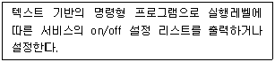
- ntsysv
- chkdsk
- chkconfig
- systemctl
(정답률: 58%)
9. 다음 중 프로세스에 대한 정의로 틀린 것은?
- 실행(executing)중인 프로그램
- PC(Program Counter)를 지닌 프로그램
- PCB(Process Control Block)를 지닌 프로그램
- 수동적인 개체(entity)로 순차적으로 수행하는 프로그램
(정답률: 77%)
10. 다음 중 X윈도에 관한 설명으로 틀린 것은?
- 원격지의 X클라이언트를 다른 시스템의 X서버에서 실행시킬 수 있다.
- 디스플레이 장치에 의존적이지 않고 서로 다른 기종을 함께 사용할 수 있다.
- X윈도는 클라이언트/서버 구조로 되어있고 서로간의 통신을 위해 xhost를 사용한다.
- 현재 리눅스를 비롯하여 유닉스 대부분이 X.org 기반의 X윈도 시스템을 사용하고 있다.
(정답률: 54%)
11. 다음 ( 괄호 ) 안에 들어갈 내용으로 알맞은 것은?
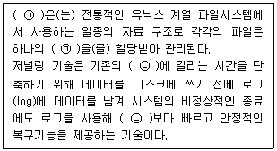
- ㉠ i-node, ㉡ fsck
- ㉠ journaling, ㉡ fsck
- ㉠ i-node, ㉡ chkdsk
- ㉠ journaling, ㉡ chkdsk
(정답률: 71%)
12. 다음 설명으로 알맞은 것은?
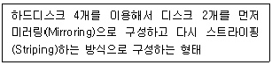
- RAID-5
- RAID-6
- RAID-9
- RAID-10
(정답률: 65%)
13. 다음 중 로그인 메시지 관련 파일로 틀린 것은?
- /etc/motd
- /etc/inittab
- /etc/issue
- /etc/issue.net
(정답률: 67%)
14. 다음에서 설명하는 내용으로 알맞은 것은?
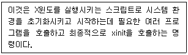
- initw
- initx
- startw
- startx
(정답률: 82%)
15. 다음 중 셸(shell)의 특징으로 알맞은 것은?
- bash에서는 명령어 히스토리 기능을 제공한다.
- 표준에러(Standard error)는 셸에서 숫자값 0으로 표기한다.
- 사용자가 로그인 셸을 변경하려면 shch 명령을 사용하면 된다.
- 사용자 로그인 셸 정보는 /etc/passwd 파일의 5번째 필드에서 확인할 수 있다.
(정답률: 68%)
16. 다음 중 네트워크 설정인 점보 프레임(Jumbo Frame)에 대한 설명으로 틀린 것은?
- 점보 프레임의 최솟값은 1300바이트이다.
- ifconfig 명령을 이용하여 점보 프레임 설정 값을 변경 할 수 있다.
- ifconfig 명령을 이용하여 현재 설정된 점보프레임 설정 값을 확인 할 수 있다.
- 점보 프레임은 스위치와 네트워크 인터페이스 둘 다 지원해야 사용 할 수 있다.
(정답률: 60%)
17. 다음 중 TCP 와 UDP의 설명으로 틀린 것은?
- TCP 와 UDP는 둘 다 전송계층에서 사용되는 프로토콜이다.
- UDP는 3-way handshaking이라는 방식으로 세션을 연결한다.
- TCP는 IP에 의해 전달되는 패킷의 오류를 검사하고 재전송을 요구하는 역할을 한다.
- UDP는 시스템 내부 메시지 및 소규모 데이터 전송에 이용되고, DNS에서 많이 사용한다.
(정답률: 75%)
18. 다음 중 프로토콜에 대한 설명으로 틀린 것은?
- 프로토콜의 주요 제정기관으로는 ISO, IEEE, EIA, ITU-T 등이 있다.
- OSI 7계층 중 인터넷 계층에 사용되는 프로토콜은 ICMP, ARP, IMAP 등이 있다.
- 프로토콜의 3가지 구성요소는 순서(Timing), 구문(Syntax), 의미(Semantics) 이다.
- 프로토콜의 주요 기능으로는 캡슐화, 단편화와 재조합, 멀티 플렉싱, 흐름제어, 동기화 등이 있다.
(정답률: 73%)
19. 다음 중 IPv6를 구분하는 구분자로 알맞은 것은?
- 콤마(,)
- 콜론(:)
- 세미콜론(;)
- 피어리어드(.)
(정답률: 83%)
20. 네트워크 부하를 줄이기 위해 방화벽에서 ping과 traceroute관련 프로토콜을 차단하려고 한다. 다음 중 차단해야 하는 프로토콜로 가장 알맞은 것은?
- IP
- ARP
- UDP
- ICMP
(정답률: 76%)
2과목: 리눅스 시스템 관리
21. 다음 설명에 해당하는 명령으로 알맞은 것은?
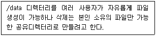
- chmod u+s /data
- chmod g+s /data
- chmod o+s /data
- chmod o+t /data
(정답률: 52%)
22. 다음 중 PID가 1222번인 프로세스를 실행한 파일명을 확인할 때 사용하는 파일로 알맞은 것은?
- /proc/1222/fd
- /proc/1222/exe
- /proc/PID/1222/fd
- /proc/PID/1222/exe
(정답률: 42%)
23. 다음 중 10분 주기로 실행되는 crontab 설정으로 알맞은 것은?
- */10 * * * * /etc/lin.sh
- * */10 * * * /etc/lin.sh
- * * */10 * * /etc/lin.sh
- * * * */10 * /etc/lin.sh
(정답률: 76%)
24. 다음 중 lin.txt 파일에서 a로 시작되는 줄만 검색하려고 할 때의 명령으로 알맞은 것은?
- grep a lin.txt
- grep ^a lin.txt
- grep [a] lin.txt
- grep [^a] lin.txt
(정답률: 69%)
25. 다음 ( 괄호 ) 안에 들어갈 수 있는 명령으로 틀린 것은?
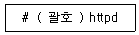
- kill
- pgrep
- pkill
- killall
(정답률: 60%)
26. 다음 ( 괄호 ) 안에 들어갈 내용으로 알맞은 것은?
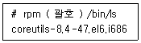
- -q
- -qc
- -qf
- -qp
(정답률: 49%)
27. 다음 중 fdisk 명령을 이용해서 파티션 속성을 Linux LVM으로 변경할 때 지정하는 코드값으로 알맞은 것은?
- 82
- 83
- 8e
- fd
(정답률: 60%)
28. 묶여있는 소스 파일을 현재 디렉터리에 풀지 않고 내용만 확인하려고 한다. ( 괄호 ) 안에 들어갈 내용으로 알맞은 것은?
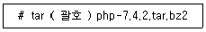
- jxvf
- jtvf
- Jxvf
- Jtvf
(정답률: 62%)
29. 다음 설명과 관련 있는 파일명으로 알맞은 것은?
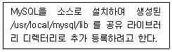
- /etc/ldd
- /etc/ldconfig
- /etc/ld.config
- /etc/ld.so.conf
(정답률: 44%)
30. 다음 중 /etc/xinetd.d 디렉터리를 현재 디렉터리에 x로 연결하여 손쉽게 디렉터리를 이동하려고 할 때 설정하는 명령으로 알맞은 것은?
- ln x /etc/xinetd.d
- ln /etc/xinetd.d x
- ln -s x /etc/xinetd.d
- ln -s /etc/xinetd.d x
(정답률: 60%)
31. 다음 중 ihduser 사용자의 계정만기일을 2020년 12월 31일로 지정하는 명령으로 알맞은 것은?
- usermod -i 2020-12-31 ihduser
- usermod -I 2020-12-31 ihduser
- usermod -e 2020-12-31 ihduser
- usermod -f 2020-12-31 ihduser
(정답률: 70%)
32. 다음 중 root 권한을 갖는 사용자를 찾는 방법으로 가장 알맞은 것은?
- /etc/passwd의 두 번째 필드 값이 0인 사용자를 찾는다.
- /etc/passwd의 세 번째 필드 값이 0인 사용자를 찾는다.
- /etc/passwd의 두 번째 필드 값이 1인 사용자를 찾는다.
- /etc/passwd의 세 번째 필드 값이 1인 사용자를 찾는다.
(정답률: 57%)
33. 다음 중 소스 컴파일 단계인 configure를 통해 생성되는 파일명으로 알맞은 것은?
- config.make
- config.h
- make.config
- Makefile
(정답률: 66%)
34. 다음 중 yum을 이용해서 telnet-server라는 패키지를 제거하는 명령으로 알맞은 것은?
- yum erase telnet-server
- yum delete telnet-server
- yum -e telnet-server
- yum -d telnet-server
(정답률: 56%)
35. 백업 작업이 수행 중인 터미널이 닫혀도 계속적으로 작업이 가능하도록 실행하려고 한다. ( 괄호 )안에 들어갈 수 있는 명령으로 알맞은 것은?
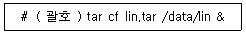
- bg
- fg
- jobs
- nohup
(정답률: 61%)
36. 다음은 ihduser 사용자의 디스크 쿼터를 설정하는 과정이다. ( 괄호 ) 안에 들어갈 명령어로 알맞은 것은?
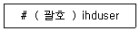
- quotacheck
- edquota
- quotaon
- repquota
(정답률: 68%)
37. 다음 중 프로세스의 우선순위 변경과 가장 거리가 먼 명령은?
- jobs
- top
- nice
- renice
(정답률: 63%)
38. 다음 그림에 해당하는 명령으로 알맞은 것은?
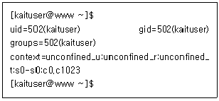
- w
- id
- who
- users
(정답률: 64%)
39. 다음 중 /etc/group의 필드 구성 예로 알맞은 것은?
- ihd:x:500:
- ihd:500:x:
- ihd:500:500:
- ihd:500:500:x
(정답률: 62%)
40. 다음 중 사용자 추가 시에 제공되는 파일이나 디렉터리를 확인할 수 있는 디렉터리로 알맞은 것은?
- /home
- /etc/skel
- /etc/login.defs
- /etc/default/useradd
(정답률: 53%)
41. 다음 중 커널에 탑재되는 모듈 관련 디렉터리 경로로 알맞은 것은?
- /lib/커널버전/modules/kernel
- /lib/커널버전/kernel/modules
- /lib/modules/커널버전/kernel
- /lib/modules/kernel/커널버전
(정답률: 64%)
42. 다음 그림에 해당하는모듈관련 명령어로알맞은것은?
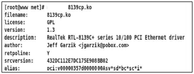
- lsmod
- depmod
- modinfo
- modprobe
(정답률: 59%)
43. 다음 ( 괄호 ) 안에 들어갈 내용으로 알맞은 것은?
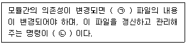
- ㉠ modprobe.conf ㉡ modprobe
- ㉠ modprobe.conf ㉡ depmod
- ㉠ modules.dep ㉡ modprobe
- ㉠ modules.dep ㉡ depmod
(정답률: 54%)
44. 다음 제시된 프린터 관련 명령어 중 나머지 셋과 비교해서 다른 계열로 속하는 명령으로 알맞은 것은?
- lp
- lpr
- lpstat
- cancel
(정답률: 63%)
45. 다음 설명으로 알맞은 것은?
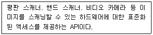
- SANE
- ALSA
- DSSI
- LADSPA
(정답률: 73%)
46. 다음 설명으로 알맞은 것은?
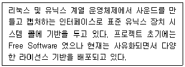
- OSS
- ALSA
- SANE
- PulseAudio
(정답률: 59%)
47. 다음 중 지정한 파일이 프린터를 통해 출력되도록 작업을 요청하는 명령으로 알맞은 것은?
- pr
- lpr
- lpq
- lpstat
(정답률: 68%)
48. 다음 설명에 해당하는 커널 컴파일 과정으로 알맞은 것은?
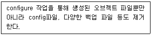
- make config
- make clean
- make mrproper
- make xconfig
(정답률: 54%)
49. 다음 설명으로 알맞은 것은?
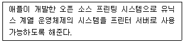
- CUPS
- LPD
- IPP
- LPRng
(정답률: 67%)
50. 다음 ( 괄호 ) 안에 들어갈 모듈 관련 명령어로 알맞은 것은?
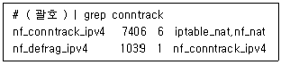
- lsmod
- insmod
- rmmod
- modprobe
(정답률: 65%)
51. 다음은 GRUB 패스워드를 설정하는 과정의 일부이다. ( 괄호 ) 안에 들어갈 내용으로 알맞은 것은?
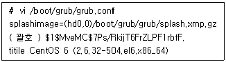
- passwd --md5
- password --md5
- md5crypt
- grub-md5-crypt
(정답률: 50%)
52. 다음 중 SSH에 관한 설명으로 알맞은 것은?
- ssh는 IPv6 주소체계에서는 접속이 불가능하다.
- ssh는 로그인 전에 보여주는 메시지를 별도의 파일로 지정 할 수 있다.
- ssh서버의 환경 설정 파일은 /etc/sshd_config이고 실행 데몬 스크립트는 /etc/rc.d/init.d/sshd이다.
- ssh는 사용할 암호화 알고리즘을 지정할 수 있으나, ssh2 버전에서 알고리즘을 지정하지 않으면 기본적으로 DSA를 사용한다.
(정답률: 48%)
53. cpio명령을 이용하여 백업된 데이터의 내용만 확인하려고 한다. 다음 중 사용되는 옵션으로 가장 알맞은 것은?
- -ic
- -icvt
- -icdv
- -ocvF
(정답률: 59%)
54. 다음 중 ASCII 형태의 로그 파일로 알맞은 것은?
- /var/log/btmp
- /var/log/wtmp
- /var/log/lastlog
- /var/log/xferlog
(정답률: 54%)
55. 다음 중 로그 관련 파일의 특징으로 알맞은 것은?
- /var/log/wtmp : 콘솔, ftp 등 접속이 실패한 경우 기록
- /var/log/lastlog : 부팅 시 동작하는 데몬 관련 정보 기록
- /var/log/dmesg : 시스템이 부팅할 때 출력되었던 로그 기록
- /var/log/boot.log : telnet이나 ssh를 이용하여 접속한 사용자의 마지막 정보를 기록
(정답률: 67%)
56. 다음 중 ( 괄호 )안에 들어갈 내용으로 알맞은 것은?
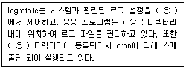
- ㉠ : /etc/logrotate.conf
㉡ : /etc/logrotate
㉢ : /etc/crontab - ㉠ : /etc/logrotate.conf
㉡ : /etc/logrotate.d
㉢ : /etc/cron.daily - ㉠ : /etc/logrotate/logrotate.conf
㉡ : /opt/logrotate.d
㉢ : /etc/cron.daily - ㉠ : /etc/logrotate/logrotate.conf
㉡ : /opt/logrotate
㉢ : /var/lib/logrotate.status
(정답률: 50%)
57. single 모드 부팅을 제한하기 위하여 grub 패스워드를 설정하려고 한다. 다음 중 grub 패스워드 설정 시 사용되는 암호화 알고리즘으로 알맞은 것은?
- MD5
- SHA-1
- SHA-256
- Blowfish
(정답률: 69%)
58. 다음에서 설명하는 보안 도구로 알맞은 것은?
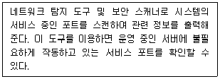
- nmap
- nessus
- tripwire
- tcpdump
(정답률: 59%)
59. 다음 중 상호 대화식 복구 프로그램으로 알맞은 것은?
- dd
- cpio
- rsync
- restore
(정답률: 50%)
60. 다음 중 증분 백업을 지원하지 않는 명령으로 알맞은 것은?
- tar
- cpio
- rsync
- dump
(정답률: 58%)
3과목: 네트워크 및 서비스의 활용
61. 개인 홈페이지 사용자를 위해 httpd.conf 파일에서 관련 모듈을 활성화하려고 한다. 다음 ( 괄호 ) 안에 들어갈 항목명으로 알맞은 것은?
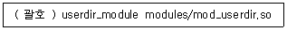
- Include
- AddType
- AddModule
- LoadModule
(정답률: 46%)
62. 다음 ( 괄호 ) 안에 들어갈 명령으로 알맞은 것은?
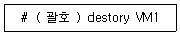
- virsh
- libvirtd
- virt-top
- virt-manager
(정답률: 56%)
63. 다음은 /etc/named.conf 파일 설정의 일부이다. 여러 호스트를 하나의 명칭으로 지정할 때 ( 괄호 ) 안에 들어갈 내용으로 알맞은 것은?
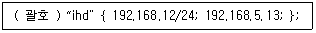
- acl
- list
- group
- member
(정답률: 57%)
64. 다음 중 smb.conf 파일에서 특정 네트워크 대역의 접근을 허가하는 설정으로 알맞은 것은?
- hosts allow = 192.168.5
- hosts allow = 192.168.5.
- hosts allow = 192.168.5.0
- hosts allow = 192.168.5.0/24
(정답률: 47%)
65. 다음 설명에 해당하는 HTTP 요청 메소드 (Method)로 알맞은 것은?
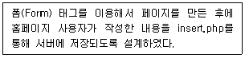
- GET
- POST
- PUT
- HEAD
(정답률: 64%)
66. 다음은 웹 페이지 인증을 위해 아파치 사용자를 만드는 과정이다. ( 괄호 ) 안에 들어갈 명령으로 알맞은 것은?
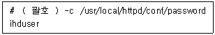
- htpasswd
- htuseradd
- apachectl
- httpd
(정답률: 48%)
67. 다음 중 인증 관련 서비스와 가장 거리가 먼 것은?
- NFS
- NIS
- LDAP
- Active Directory
(정답률: 60%)
68. 다음 중 이름을 나타내는 LDAP의 속성 관련 키워드로 알맞은 것은?
- c
- cn
- sn
- givenName
(정답률: 37%)
69. 다음 중 NIS 서버에 동작 시켜야할 데몬명으로 가장 거리가 먼 것은?
- ypxfrd
- rpcbind
- ypbind
- ypserv
(정답률: 43%)
70. 다음 ( 괄호 ) 안에 들어갈 명령어로 알맞은 것은?
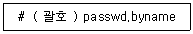
- ypcat
- yppasswd
- ypwhich
- ypwhich -m
(정답률: 50%)
71. 다음 설명에 해당하는 /etc/exports의 옵션으로 알맞은 것은?
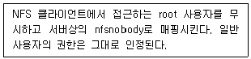
- root_squash
- no_root_squash
- all_squash
- no_all_squash
(정답률: 51%)
72. 다음 ( 괄호 ) 안에 들어갈 명령으로 알맞은 것은?
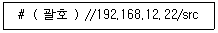
- smbmount
- smbclient
- smbstatus
- testparm
(정답률: 46%)
73. 다음 중 메일 관련 프로그램의 종류가 다른 것은?
- postfix
- evolution
- qmail
- sendmail
(정답률: 63%)
74. 다음 중 sendmail.cf 파일에서 특정 도메인명을 발신지 메일 주소로 강제 지정할 때 사용하는 항목으로 알맞은 것은?
- Cw
- Fw
- Dj
- O
(정답률: 57%)
75. 다음 ( 괄호 ) 안에 들어갈 수 있는 명령으로 알맞은 것은?
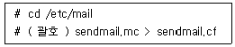
- m4
- newaliases
- sendmail
- makemap hash
(정답률: 62%)
76. 다음은 /etc/named.conf 파일 설정의 일부이다. 도메인 설정에 필요한 zone 파일을 별도의 파일로 지정하려고 할 때 ( 괄호 ) 안에 들어갈 내용으로 알맞은 것은?
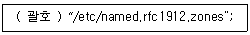
- zone
- include
- directory
- allow-zones
(정답률: 39%)
77. 다음은 /etc/named.conf 파일 설정의 일부이다. ( 괄호 ) 안에 들어갈 내용으로 알맞은 것은?
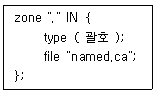
- hint
- master
- slave
- local
(정답률: 58%)
78. 다음은 zone 파일에서 메일 서버를 설정하는 과정이다. 도메인이 ihd.or.kr일 때 ( 괄호 ) 안에 들어갈 내용으로 알맞은 것은?
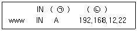
- ㉠ MX ㉡ ihd.or.kr
- ㉠ MX ㉡ ihd.or.kr.
- ㉠ MX 0 ㉡ ihd.or.kr
- ㉠ MX 0 ㉡ ihd.or.kr.
(정답률: 39%)
79. 다음 설명에 해당하는 가상화 기술로 알맞은 것은?
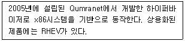
- Xen
- KVM
- Docker
- Ansible
(정답률: 46%)
80. 운영 중인 텔넷 서버로 IP 주소가 192.168.5.13인 호스트의 접근을 Tcp Wrapper를 이용해서 접근을 차단하려고 한다. 다음 ( 괄호 ) 안에 들어갈 내용으로 알맞은 것은?
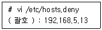
- telnet
- telnetd
- in.telnetd
- telnet.service
(정답률: 41%)
81. 다음 ( 괄호 )안에 들어갈 내용을 알맞은 것은?
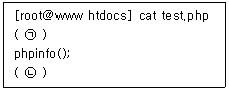
- ㉠ <?php ㉡ ?>
- ㉠ <%php ㉡ %>
- ㉠ <!php ㉡ !>
- ㉠ <&php ㉡ &>
(정답률: 69%)
82. 다음 중 CPU 반가상화 기술을 기반으로 가상 머신을 생성할 때 사용하는 기술로 가장 알맞은 것은?
- Xen
- KVM
- VirtualBox
- Docker
(정답률: 55%)
83. 다음 ( 괄호 ) 안에 들어갈 파일명으로 알맞은 것은?
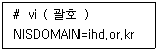
- /etc/hosts
- /etc/yp.conf
- /etc/ypbind.conf
- /etc/sysconfig/network
(정답률: 43%)
84. 다음은 NFS 클라이언트에서 NFS 서버(192.168.5.13)에 익스포트된 정보를 확인하는 과정이다. ( 괄호 ) 안에 들어갈 명령으로 알맞은 것은?
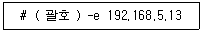
- exportfs
- nfsstat
- rpcinfo
- showmount
(정답률: 50%)
85. 다음 중 vsftpd.conf에서 익명(anonymous) 사용자의 접근을 허가할 때 사용하는 설정으로 알맞은 것은?
- anonymous_disable=YES
- anonymous_disable=NO
- anonymous_enable=YES
- anonymous_enable=NO
(정답률: 60%)
86. 다음 중 메일 서버간의 송신 및 수신에 사용되는 프로토콜로 알맞은 것은?
- POP3
- IMAP
- SMTP
- SNMP
(정답률: 62%)
87. 다음 설명과 같은 경우 ihduser가 본인의 홈 디렉터리에 생성해야할 파일명으로 알맞은 것은?
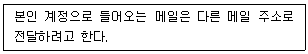
- aliases
- .forward
- virtusertable
- local-host-names
(정답률: 54%)
88. 다음 중 named.ca를 비롯하여 사용자가 선언하는 zone 파일 등이 위치하는 디렉터리로 알맞은 것은?
- /etc/named
- /etc/named/zones
- /var/named
- /var/named/zones
(정답률: 39%)
89. 다음 설명에 해당하는 가상화의 기능으로 알맞은 것은?
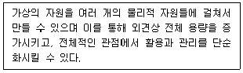
- 단일화(Aggregation)
- 에뮬레이션(Emulation)
- 절연(Insulation)
- 프로비저닝(Provisioning)
(정답률: 52%)
90. 다음 중 명령행에서 가상 머신만을 대상으로 CPU 자원을 모니터링할 때 사용하는 명령으로 알맞은 것은?
- xm
- xend
- virt-top
- virt-manager
(정답률: 61%)
91. 다음 중 xinetd 기반으로 동작하는 서비스의 초당 요청 개수가 50개 이상일 경우 10초 동안 접속 연결을 중단하기 위한 설정 항목과 값으로 알맞은 것은?
- cps = 50 10
- cps = 50 100
- cps = 10 50
- cps = 100 50
(정답률: 67%)
92. 프록시 서버의 설정 파일인 squid.conf에서 포트번호를 8080으로 변경하려고 한다. 다음 ( 괄호 )안에 들어갈 내용으로 알맞은 것은?
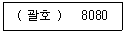
- Port
- Listen
- http_port
- proxy_port
(정답률: 44%)
93. DHCP 서버의 환경 설정 파일인 dhcpd.conf에서 할당되는 게이트웨이 주소를 192.168.5.1로 변경하려고 한다. ( 괄호 ) 안에 들어갈 내용으로 알맞은 것은?
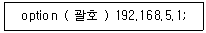
- gw
- gateway
- gw-address
- routers
(정답률: 53%)
94. 다음 중 VNC(Virtual Network Computing)와 가장 관련 있는 프로토콜로 알맞은 것은?
- RFB(Remote Frame Buffer)
- NTP(Network Time Protocol)
- MQTT(MQ Telemetry Transport)
- DHCP(Dynamic Host Configuration Protocol)
(정답률: 52%)
95. 다음 ( 괄호 ) 안에 들어갈 httpd.conf 파일의 항목명으로 알맞은 것은?
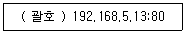
- ServerRoot
- ServerAdmin
- ServerName
- DocumentRoot
(정답률: 35%)
96. 다음설명에 해당하는iptables의 테이블로알맞은 것은?
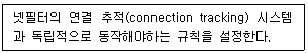
- raw
- nat
- filter
- mangle
(정답률: 52%)
97. 다음 설명에 해당하는 공격 유형으로 알맞은 것은?
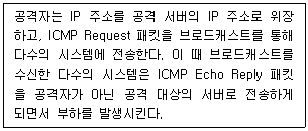
- UDP Flooding
- Land Attack
- Smurf Attack
- Teardrop Attack
(정답률: 61%)
98. 다음 설명에 해당하는 iptables의 타겟(target) 값으로 알맞은 것은?
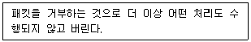
- DENY
- DROP
- REJECT
- RETURN
(정답률: 63%)
99. 다음 중 C 언어의 malloc()과 가장 관련 있는 공격 유형으로 알맞은 것은?
- 네트워크 대역폭 고갈
- 가용 메모리 자원 고갈
- 가용 디스크 자원 고갈
- 가용 프로세스 자원 고갈
(정답률: 65%)
100. 다음 중 침입 탐지 시스템으로 이용되는 도구로 가장 알맞은 것은?
- John the Ripper
- Tripwire
- Stacheldraht
- Suricata
(정답률: 40%)